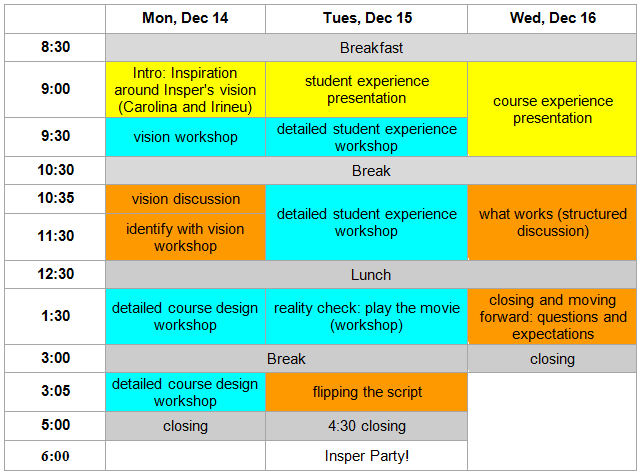

Workshop Olin
Público-alvo:
Novos professores da Engenharia
Data:
Horário:
9h às 17h
Local:
Sala 905 (9° andar)
Prezado Professor,
entre os dias 14 e 16 de dezembro contaremos com a presença dos professores de Olin Jason Wooddard, Jon Stolk e Lynn Stein para ministrar um Workshop aos novos docentes da Engenharia e convidados.
Reforçamos a importância da participação, em especial aos novos professores da Engenharia.
Confira a programação do evento:

Em caso de dúvidas, entre em contato com dea@insper.edu.br.
Contamos com sua presença!
Atenciosamente,

Irineu Gianesi
Diretoria de Ensino e Aprendizagem

Carolina da Costa
Diretoria de Graduação
 Calendário de eventos
Calendário de eventos